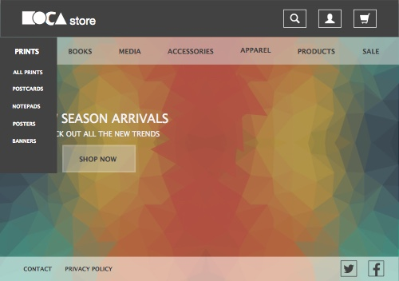
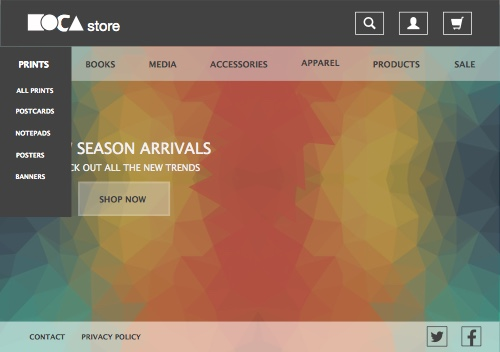
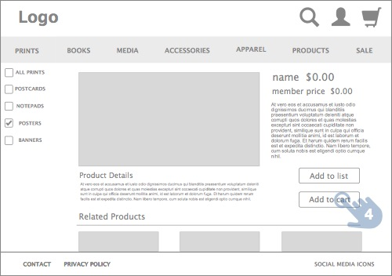
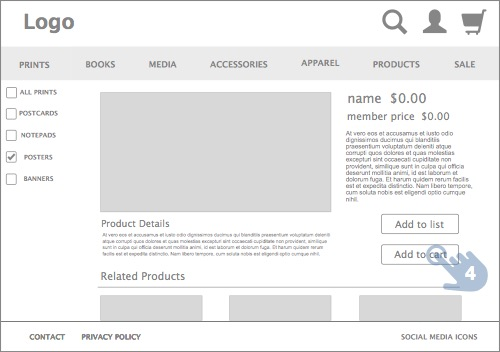

Moca Website - Checkout Workflow
The Museum of Contemporary Art, Los Angeles is a contemporary art museum with three locations in greater Los Angeles, California. The main branch is located on Grand Avenue in Downtown Los Angeles, near Walt Disney Concert Hall.
Objectives
The goal of this project was to learn the lifecycle of a design process from research to final interactive proptotypes which included sitemaps, navigation schema, user flows and checkout workflow.
My role
Redesign and reorganize home page and site navigation. Create new checkout workflow.
 



 
